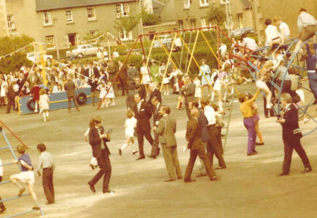
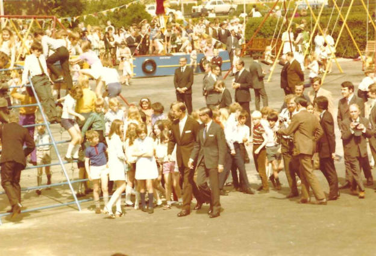
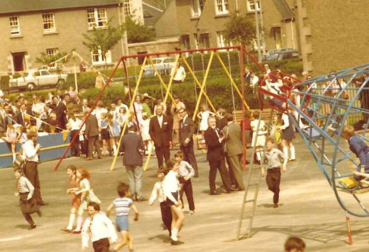

Prince Philip Visits Portobello



These photographs of Prince Philip, Duke of Edinburgh, opening the refurbished playpark in Mount Lodge in, we believe, 1971 sparked much discussion on social media in Portobello. Why Prince Philip came to open the park is unknown, but as it probably took place at the end of June, the Royal family would be in residence at Holyrood Palace. One striking aspect of the photograph is the lack of security surrounding the prince, an indicator of how much tighter security surrounding the Royal family has become in the past fifty years. We believe the man accompanying Prince Philip is Conservative Councillor Kenneth Borthwick who later became Lord Provost of Edinburgh. The colours in these photographs do not seem to be particularly true. This can be noticed most in the colour of the men’s suits, which seem to be various shades of brown, and the boys’ school trousers. They would probably all be grey. Children from Towerbank, St John’s and Brunstane primary schools were sent along to the playpark for the prince’s visit. They appear to be having a good time. The boat, named Blue Peter, was apparently set on fire in the early 1970s. Do you recognise yourself in the photograph? If so, please get in touch at admin@portobelloheritagetrust.co.uk All Photographs are Copyright of Portobello Heritage Trust ©